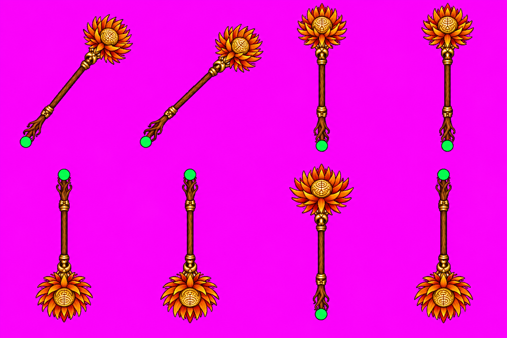
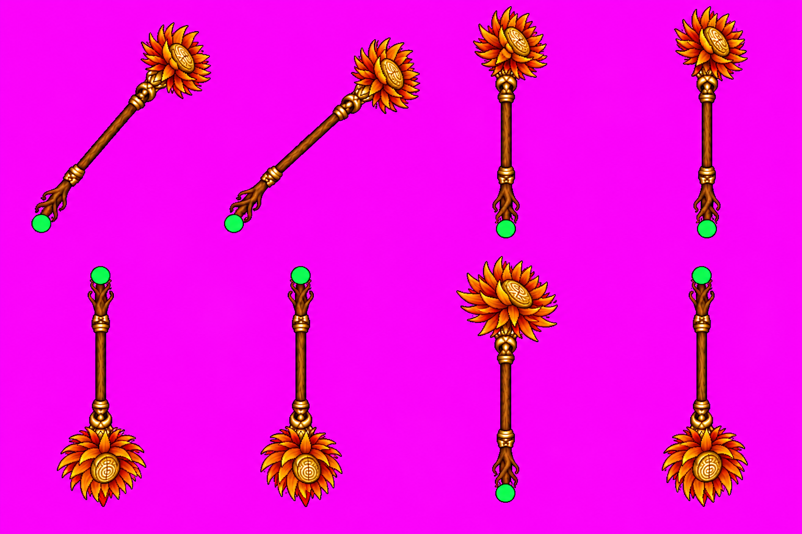
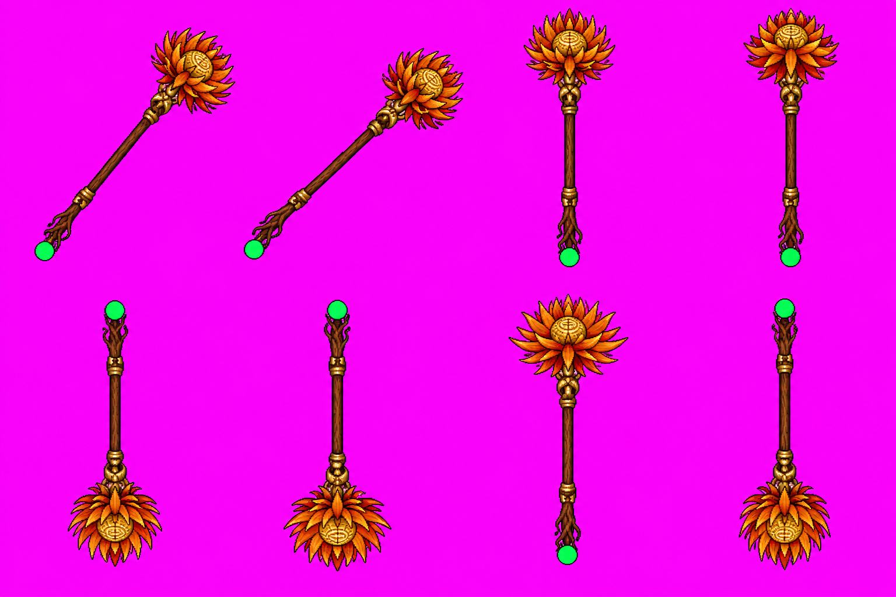
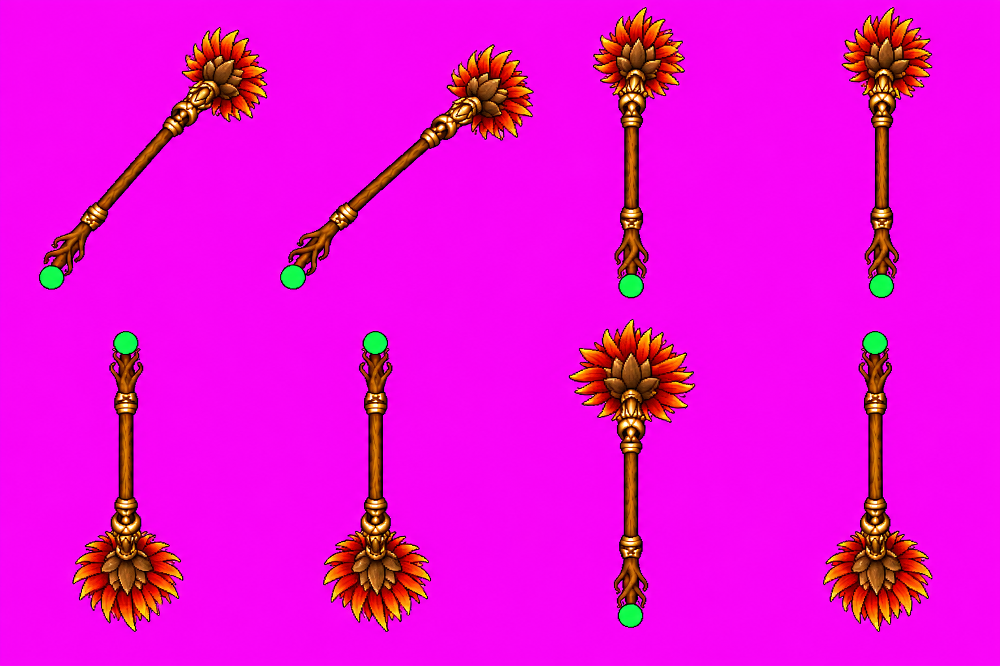
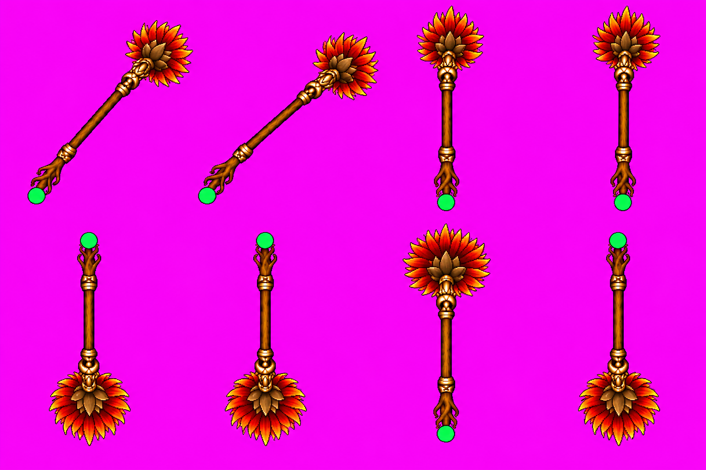
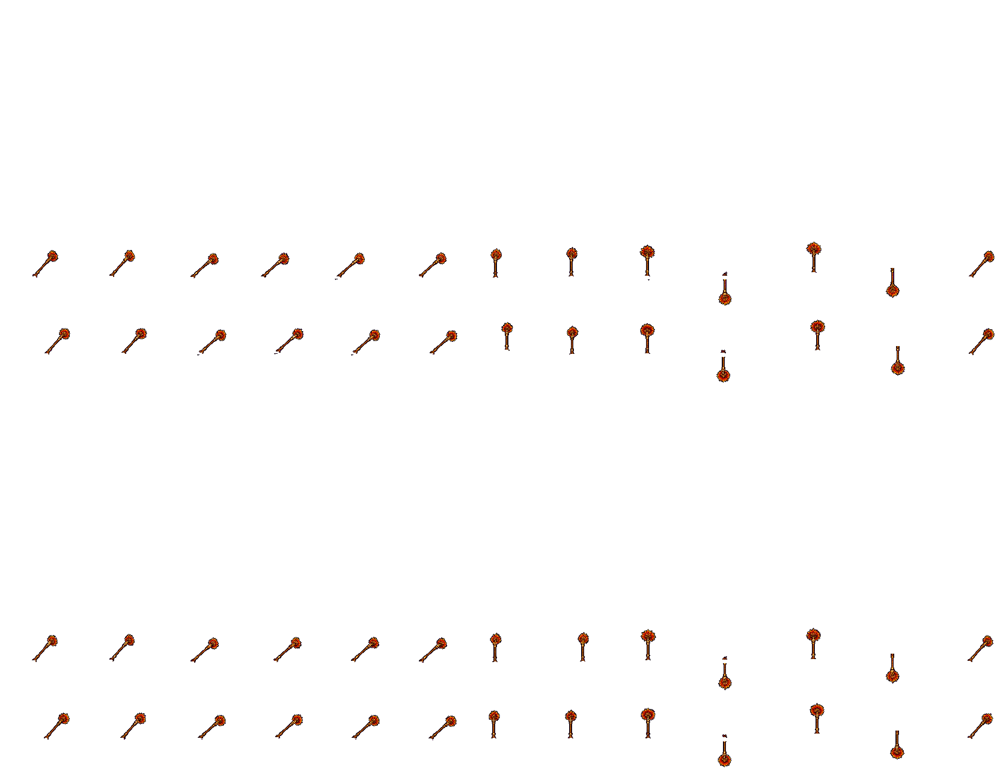
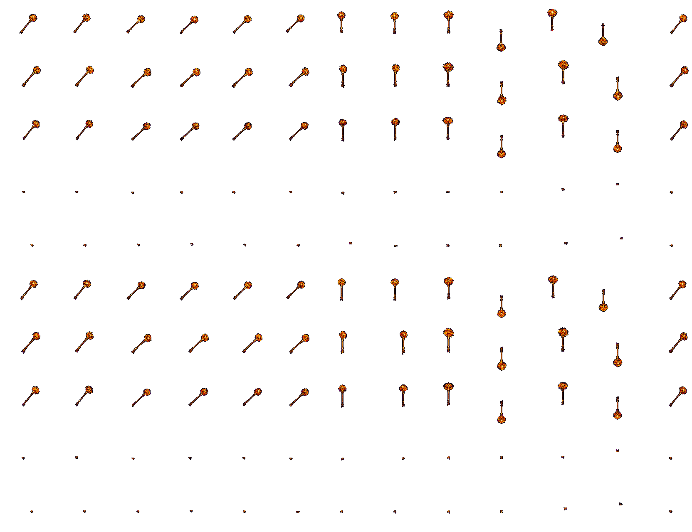

Trượng một tay, nhóm cứng đợt2. Chủ repo đã duyệt mỹ thuật; chờ AO review và CI xanh. Tái tạo bằng canonical #1391:130khung,32màu,A≤0,708px,0chặn/0mép. Cast/1 hai giới năm hướng đều dùng đúng bước2.
Nguồn và giới hạn · Hash và lịch sử · Checker · Cutter
Ảnh GameScene tắt tiếng ở artifact phiên859 được gắn tại PR; không đưa ảnh chụp thô vào Git. Giữ đầy đủ cảnh báo nhẹ chan-lech trong báo cáo.






